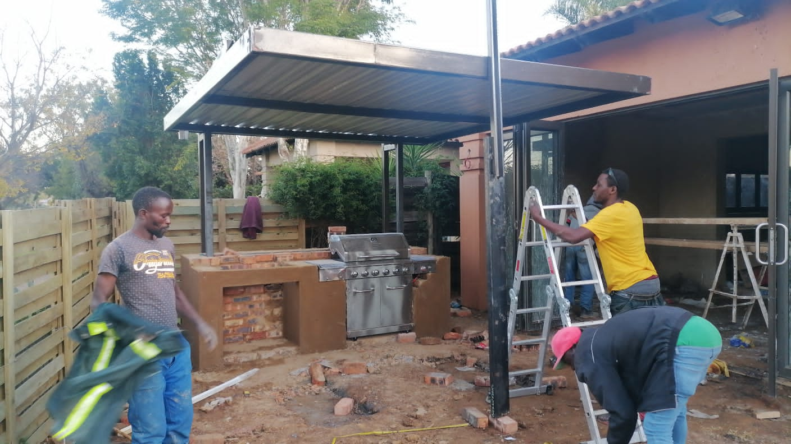
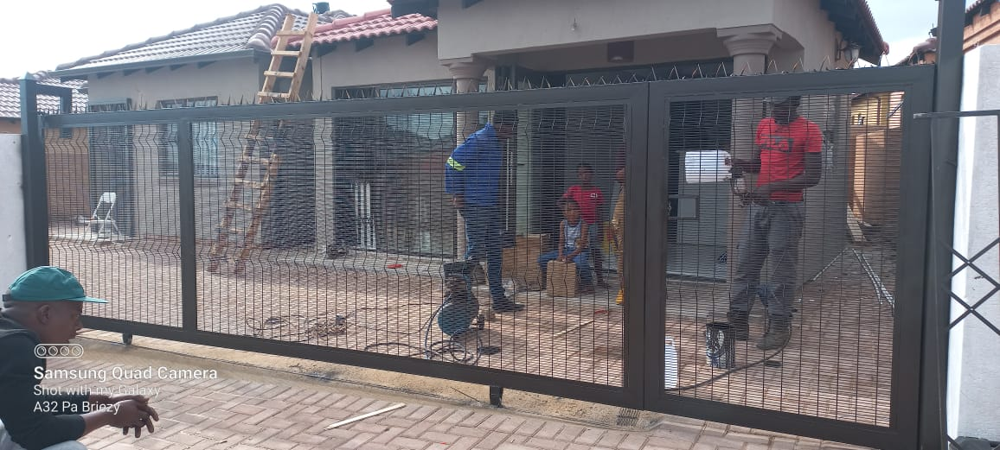
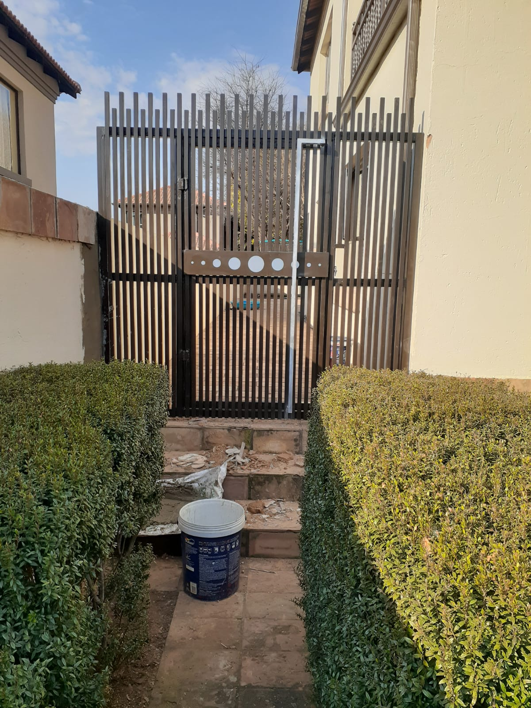
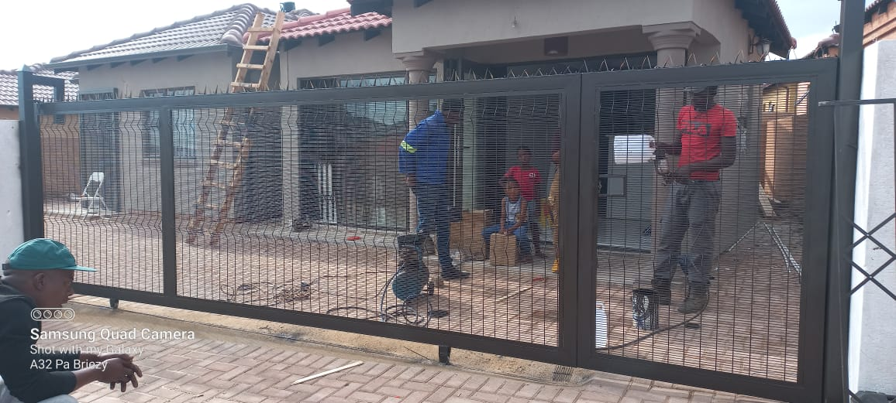
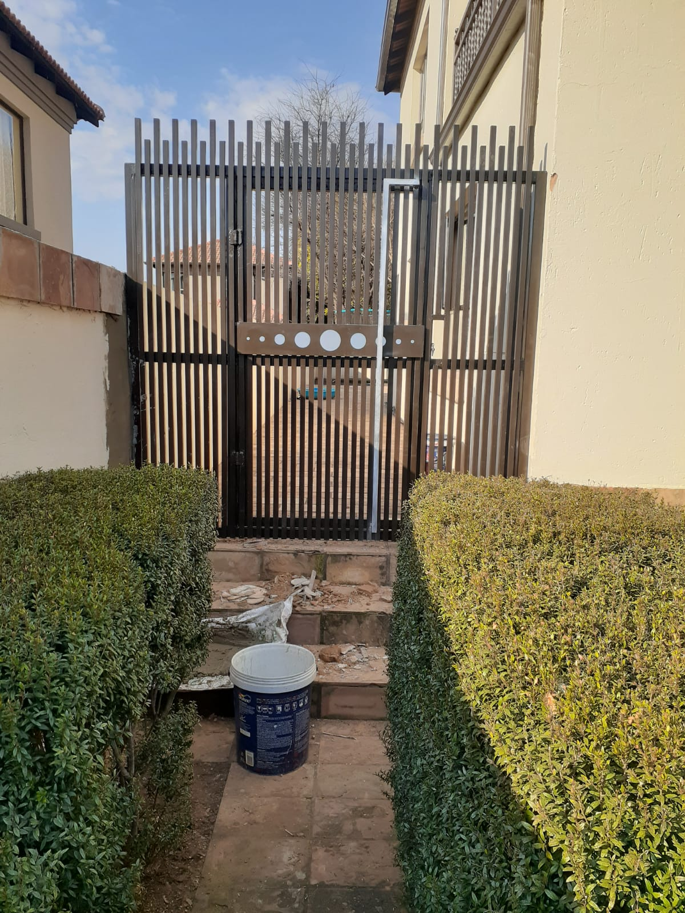
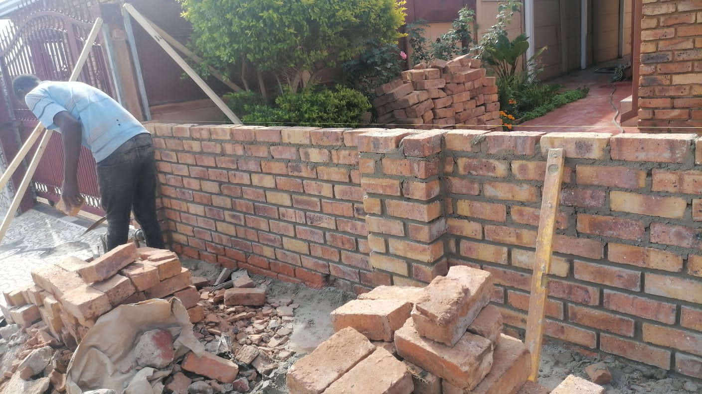
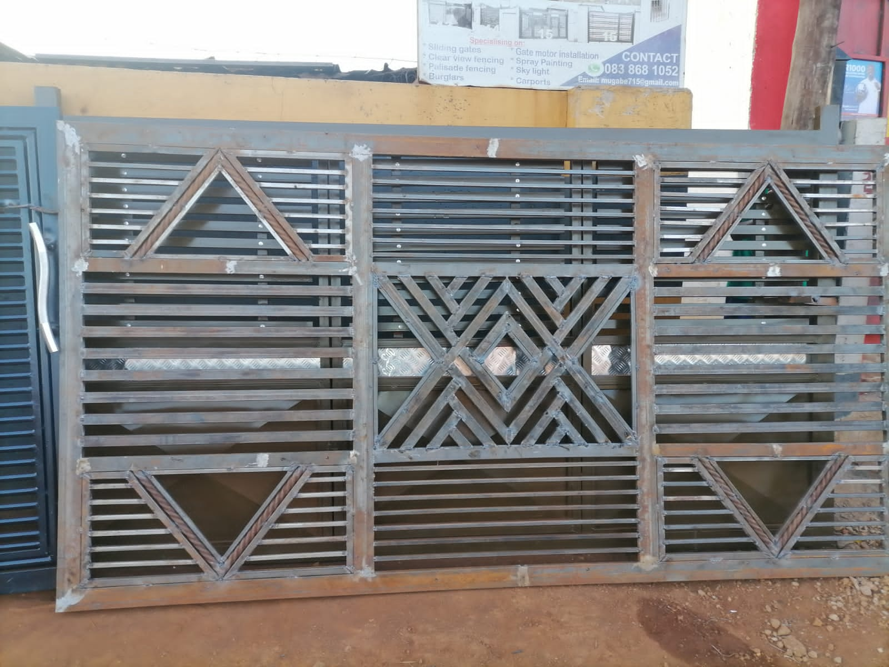

Kudzwai Construction & Projects
Home ContactsAbout Us
At Kudzwai Construction & Projects, we take pride in being a leading construction company based in Pretoria, with over a decade of invaluable experience in the industry. Our commitment to excellence, integrity, and customer satisfaction has made us a trusted name in construction services throughout the region.

Our Expertise
With a diverse portfolio of projects under our belt, we specialize in a wide range of construction services, including:
 Building Construction: From residential homes to commercial complexes, we bring expertise and precision to every construction project, ensuring quality craftsmanship and timely completion.
Building Construction: From residential homes to commercial complexes, we bring expertise and precision to every construction project, ensuring quality craftsmanship and timely completion. Painting: Our skilled painters enhance the aesthetics and durability of your property with top-notch painting services, utilizing high-quality materials and techniques.
Painting: Our skilled painters enhance the aesthetics and durability of your property with top-notch painting services, utilizing high-quality materials and techniques. Paving: We transform outdoor spaces with expert paving solutions, offering durability, functionality, and aesthetic appeal tailored to your preferences.
Paving: We transform outdoor spaces with expert paving solutions, offering durability, functionality, and aesthetic appeal tailored to your preferences. Tiling: Whether it's for floors, walls, or other surfaces, our tiling specialists deliver flawless installations that elevate the look and feel of your space.
Tiling: Whether it's for floors, walls, or other surfaces, our tiling specialists deliver flawless installations that elevate the look and feel of your space. Roofing: Protecting your property from the elements is paramount, and our roofing services ensure sturdy, weather-resistant roofs that stand the test of time.
Roofing: Protecting your property from the elements is paramount, and our roofing services ensure sturdy, weather-resistant roofs that stand the test of time. Gate Welding: Enhance security and curb appeal with our custom gate welding services, providing durable and stylish solutions tailored to your property's needs.
Gate Welding: Enhance security and curb appeal with our custom gate welding services, providing durable and stylish solutions tailored to your property's needs.Rubble Removal: Keeping your construction site or property clean and safe is essential, and our efficient rubble removal services ensure prompt and thorough debris clearance.
Our Approach
At Kudzwai Construction & Projects, we prioritize client satisfaction above all else. From initial consultation to project completion, we collaborate closely with our clients to understand their vision, requirements, and budget constraints. Our team of skilled professionals works tirelessly to deliver superior results that exceed expectations, adhering to strict quality standards and industry best practices every step of the way.
{kind=link}
Why Choose Us?
Experience: With over ten years in the industry, we bring a wealth of expertise and knowledge to every project we undertake.
Quality Craftsmanship: We are committed to delivering workmanship of the highest caliber, ensuring durable, functional, and aesthetically pleasing results.
Customer-Centric Approach: Your satisfaction is our priority, and we go above and beyond to ensure a seamless and rewarding experience from start to finish.
Reliability: Count on us to complete your project on time, within budget, and to your exact specifications, with no compromises on quality or integrity.
At Kudzwai Construction & Projects, we don't just build structures; we build lasting relationships with our clients based on trust, professionalism, and exceptional service. Contact us today to discuss your construction needs and let us bring your vision to life.

Aluminium Doors and Trelley Doors
We also make and install aluminium doors, windows, and trelley doors that beautify your homes, giving them that exotic appearance.


Electric Gate Installations & Car Ports
We are experts in electrical gate installations and mounting:
- Gate Motor Installation
- Electric Fencing
- Clear View Fencing
- Burglars
- Car Ports
 



{kind=link}
{kind=link}
Our Gallery

{kind=link}



{kind=link}